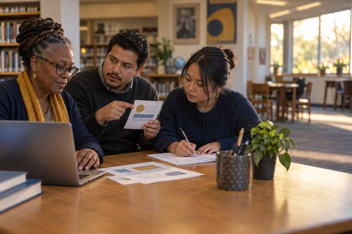

Aprendizaje profesionalpara Docentes, Bibliotecarios, Coaches
Relevos de lectura lateral
Los equipos compiten para verificar afirmaciones virales y un resumen escrito por IA saliendo de la página, no mirándola con más atención.

Todas las actividades Aprendizaje profesional
Teachers and coaches take an assignment a chatbot can finish in ten seconds and redesign it so the thinking stays with the student, trading plagiarism panic for tasks that make reasoning visible and resist cognitive offloading.
Most AI-in-school anxiety is really about assignments that AI can now complete invisibly, which turns teachers into detectives and students into suspects. This session offers a better move: stop policing the tool and redesign the task so the thinking is the point and the evidence. Participants take a real assignment they already use, test how easily a chatbot could do it, and then rebuild it using moves that resist cognitive offloading, requiring in-process reasoning, personal or local specifics, defense of choices, revision based on feedback, and comparison or critique of an AI answer rather than acceptance of it. Coaches practice the cycle (listen, co-plan, model, measure, adjust) around a teacher's redesign and name the evidence to watch. The stance is balanced: AI is not forbidden in the redesigned task, often it is deliberately part of it, but the student's thinking is what gets made visible and assessed. The guiding question stays the ELE one: what evidence shows the learning, with or without the tool?
Enganche
Ask participants to hold up the assignment they brought and silently rate, one to five, how completely a chatbot could do it right now. Most will admit three or higher. Say: "If AI can finish it in ten seconds and we'd never know, the problem isn't the students, it's the task." Reframe the goal: not detection, but redesign, so the thinking is the thing that shows.
Nota para el facilitadorRelieve the guilt and the panic. Teachers feel blamed from both sides; position redesign as professional craft, not as surrender to or war against AI.
Explorar
Participants run their assignment through Handout A: What exactly does it ask for, a product or the thinking behind it? Could AI produce it with no trace? What thinking was the assignment supposed to grow, and does the current version actually require it? If an approved chatbot is available, they literally paste the prompt and read the result, noting how good, and how hollow, it is. The gap between a slick AI output and real understanding is the opening for redesign.
Nota para el facilitadorThe live chatbot run is sobering and motivating. If unplugged, participants predict the output; most predict accurately, which makes the same point.
Modelar
Walk Handout B's seven redesign moves with a quick example of each: require in-process evidence (drafts, reasoning, not just the final product); anchor in personal or local specifics AI can't know; require students to defend choices orally or in writing; build in revision after feedback; make the task compare or critique an AI answer instead of producing one; shift to in-class reasoning or performance; and assess the process, not just the product. Note that several moves use AI on purpose, with the student's judgment as the graded part.
Nota para el facilitadorStress that no single move is a silver bullet; combining two or three is what makes thinking visible. Avoid moves that just add surveillance; aim for tasks that are better, not just harder to cheat.
Crear
In pairs or teams, each teacher redesigns their assignment using at least two moves from Handout B, writing the new version on the planner. They must answer: what thinking does this now require that AI can't fake, and what evidence of learning will I see? Partners test each other's redesign with the skeptic's question: "Could a student still get a top mark by letting AI do the thinking? If yes, which move closes that gap?"
Nota para el facilitadorCirculate for the common trap: adding hoops (handwritten, timed) without deepening thinking. Redirect toward moves that make reasoning visible, which improve the task even in a world with no AI.
Transferir
Coaches (or pairs role-playing coach and teacher) use Handout C to frame a cycle around the redesign: listen (what does the teacher want students to be able to do?), co-plan (which moves and what evidence?), model/measure (how will we look at the resulting student work together?), adjust (what will we change next time?). The coaching question stays: "What changed in student evidence?" not "Did they use AI?"
Nota para el facilitadorKeep coaches off compliance ("did you redesign it?") and on evidence ("show me two pieces of student work, what thinking do you see?"). That's the ELE coaching move.
Reflexionar
Each pair names one move they'll use this week and the evidence they'll collect. Close on the ELE question: a task is AI-ready not when it blocks the tool, but when the student's thinking is what shows, so that what evidence shows the learning can be answered honestly, whether or not AI was in the room.
Nota para el facilitadorEnd forward-looking: the redesigned task should be one the teacher is genuinely prouder of, not just harder to game.
The session runs fully on paper: participants bring printed assignments, predict AI output rather than generate it, and redesign on the planners. The seven moves, the redesign, and the coaching cycle need no devices.
An approved chatbot makes the stress test visceral, participants see their own assignment completed in seconds, which fuels the redesign. A shared drive lets a department bank and reuse redesigned tasks, multiplying the session's payoff.
¿Necesita una pantalla? Running a real assignment through AI is the one place a device genuinely adds evidence: it converts "students might cheat" into "here is exactly what the tool produces and what it misses." Everything else is better unplugged, keeping the focus on task design and student thinking.
Lo que debería poder ver o recopilar si funcionó.
Teachers redesign assignments so student thinking is visible and resistant to cognitive offloading, and coaches frame a cycle focused on changes in student evidence.
Teachers deploy the redesigned task this cycle and bring two pieces of resulting student work to the next team meeting or coaching session to examine the thinking it surfaced. Successful redesigns go into a shared department bank, and the team tackles the next AI-vulnerable common assessment.